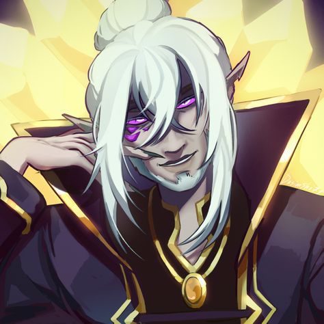
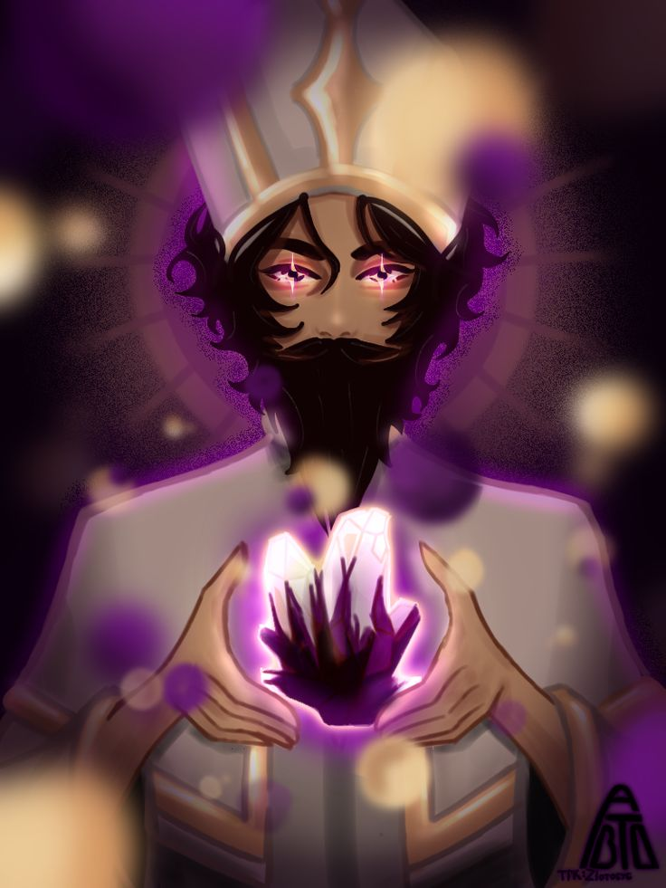
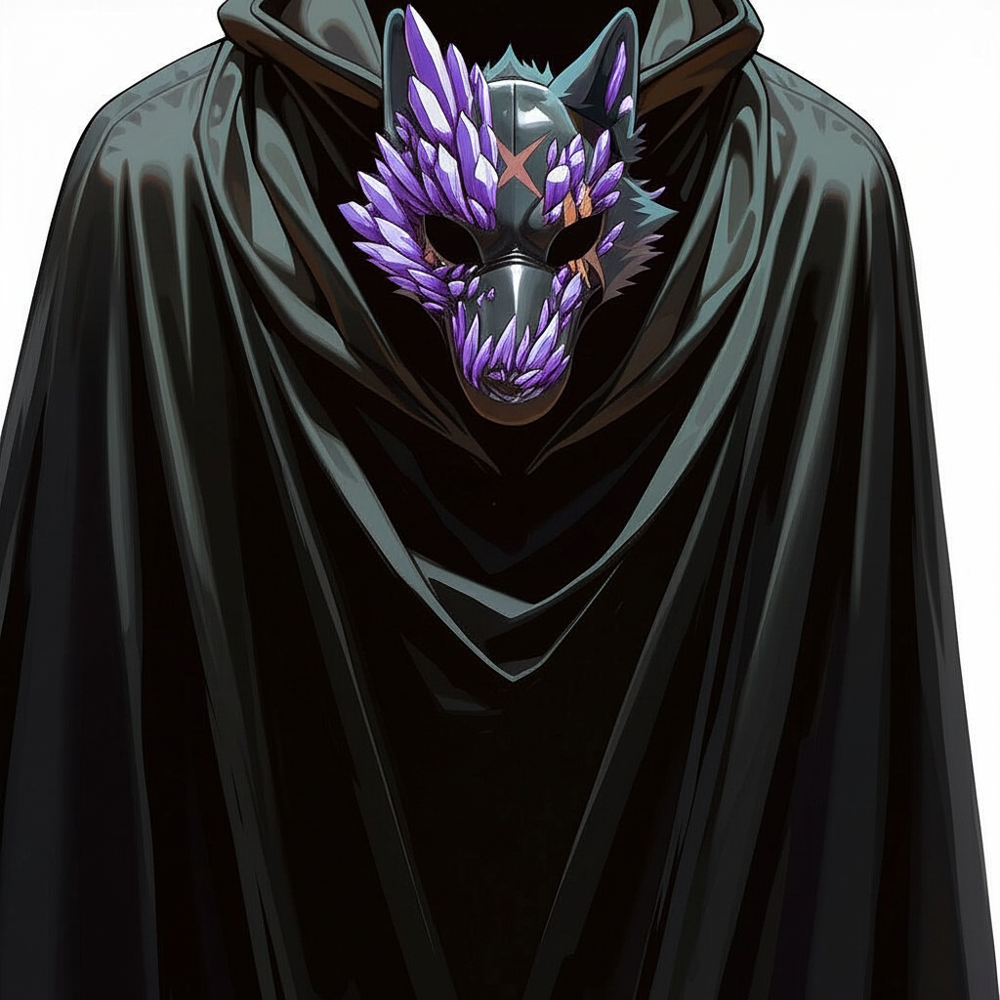
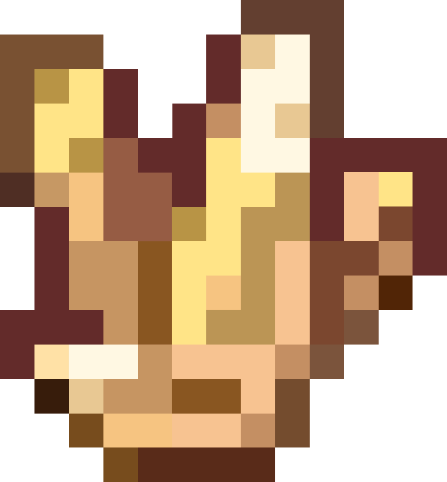
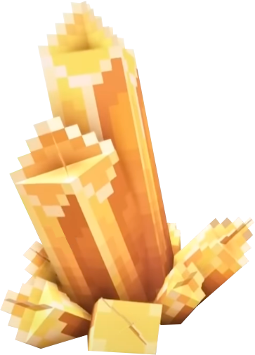

Основные Антагонисты Кампании
Отец, он же Тадмавриэль
Информация известная всем
До смерти жены Отец был мудрым и почитаемым ученым. Однажды в Эшхолд пришла хворь и унесла любовь всей его жизни, Жену Тадмавриэля Тейрасу. После Отец закрылся в себе. Через некоторое время он принес в Архей спарки и скинт и основал церковь Очищения вместе с Епископом Лукием. Ныне он заточен под горами Гохледдола и его верные последователи пытаются его найти и освободить, ведь когда наступит "Второе пришествие Отца", многовекова завеса над миром падет и придет истинное Очищение...
Первое впечатление:???
Информация которую вы узнали:???
Эпископ Лукий
Информация известная всем
Один из основателей церкви Очищения и давний друг Тадмавриэля. Он верный последователь религии и верит, что принеся Очищения, наступит истинное счастье.
Первое впечатление:???
Информация которую вы узнали:???
Главный Инквизитор Морс
Информация известная всем
Имеет и другой титул, Кардинал. Он верный последователь очищения. От рук Морса и его бойцов полегло множество еретиков...
Первое впечатление:???
Информация которую вы узнали:???
Важные NPC
Вит
Информация известная всем

Старший брат Осона, состоит в ГСРЦ(Группа специального реагирования Церкви). Не смотря на то, что он человек, он учился в академии Миралисе.
Первое впечатление:
Гуах'ткш'кхтар(Гуата) о ВитеВит довольно сильный и опытный чародей или кто он там так как при малейшем приближении "освящённого" мгновенно его устранил
Информация которую вы узнали:???
Доп. информация для понимания сюжета
Скинт
Сила мироходцев, которая обрела материальную форму. Скинт представляет собой непрозрачные хрупкие кристаллы желтого цвета.
Это вы знаете как реальные люди, а не персонажи. Персонажи знают информацию о том, что Отец принес скинт в Архей и то что истиная форма Скинта- ЗараженнаяПутеводный Скинт
Особый вид скинта, который связан с другими путеводными скинтами "сетью". При помощи заклинаний можно перемещатся между известными колдующему скинтами. Если вы нашли зараженную версию скинта, то ее можно очистить до обычного путеводного скинта, благодаря заклинанию Церемония.
Искра/Вспышка/ОМП
Орган, что делает мироходцев мироходцами. Орган повышает физическую силу, время жизни и дает способность перемещаться между мирами.
Воплощенные
Существа, что прошли через обряд очищения. Охотниками особо уважаются дворфы со своими тяжелыми секирами и молотами, ведь они могу убить воплощенного за один удар.
Мировая Завеса
Завеса, которая покрыла весь Архей. Из-за этого в Архее нет ни дня, ни ночи и ее хочет уничтожить церковь Очищения.